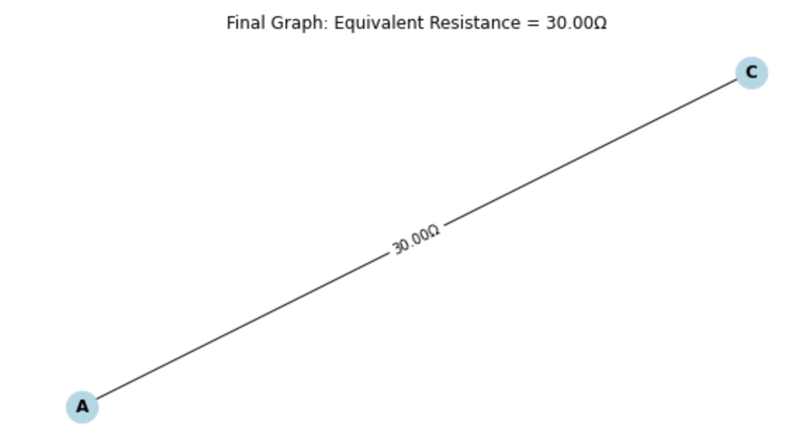
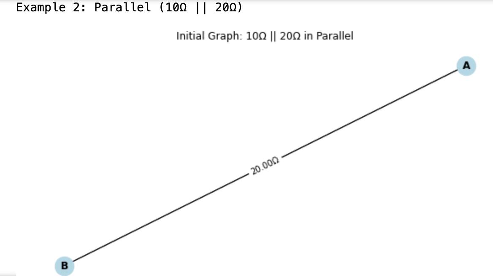
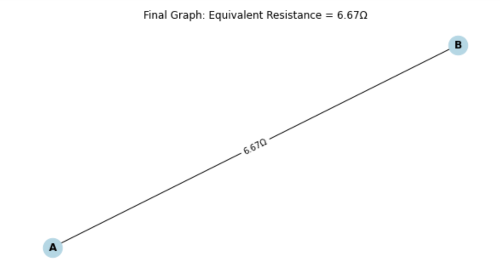
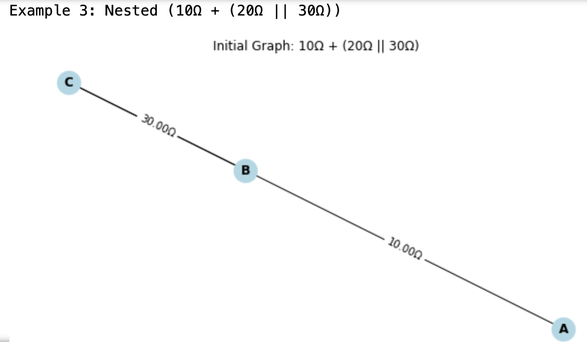
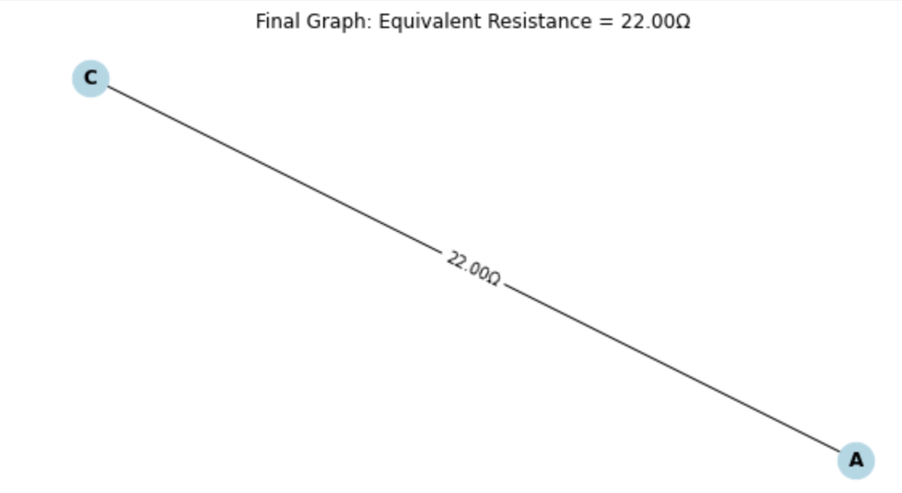

Problem 1
Motivation
Calculating equivalent resistance is a cornerstone of electrical circuit analysis, vital for designing efficient systems in electronics, power distribution, and beyond. Traditional methods—repeatedly applying series and parallel resistor formulas—work well for simple circuits but quickly become tedious and error-prone as complexity increases. Imagine a sprawling network of resistors: manually tracing paths and simplifying step-by-step feels like solving a puzzle without a clear strategy.
Graph theory transforms this challenge into an elegant, systematic process. By modeling a circuit as a graph—nodes as junctions, edges as resistors with weights—we unlock a structured way to simplify even the most tangled configurations. This isn’t just about convenience; it’s about power. Graph-based algorithms enable automation, paving the way for circuit simulation software, optimization tools, and scalable network design—think microchip layouts or power grids.
Beyond practicality, this approach is a playground for curiosity. It bridges physics and mathematics, revealing how abstract concepts like connectivity and traversal apply to real-world systems. Whether you’re an engineer streamlining a design or a student exploring interdisciplinary ideas, mastering equivalent resistance through graph theory sharpens your problem-solving toolkit and sparks deeper insights into the hidden patterns of circuits.
Problem: Equivalent Resistance Using Graph Theory
Option 2: Advanced Task – Full Implementation
Task: Implement an algorithm in a programming language to compute the equivalent resistance of a circuit graph. The implementation must:
- Accept a circuit graph as input.
- Handle arbitrary resistor configurations (series, parallel, nested).
- Output the final equivalent resistance.
- Test with examples: simple series/parallel, nested configurations, and complex graphs.
Deliverables:
- Full Python implementation with explanations.
- Pseudocode for clarity.
- Three example test cases with step-by-step breakdowns.
- Brief analysis of efficiency and potential improvements.
Solution
Pseudocode
Algorithm ComputeEquivalentResistance(G, source, target):
Input: Graph G (nodes = junctions, edges = resistors with weights), source node, target node
Output: Equivalent resistance between source and target
While G has more than one edge OR nodes ≠ {source, target}:
// Series Reduction
For each node n in G:
If degree(n) = 2:
neighbors = {n1, n2}
r1 = sum of weights of edges between n and n1
r2 = sum of weights of edges between n and n2
Remove node n
Add edge (n1, n2) with weight r1 + r2
Continue
// Parallel Reduction
For each pair of nodes (n1, n2) in G:
If multiple edges exist between n1 and n2:
resistances = list of weights of edges between n1 and n2
r_eq = 1 / (sum(1/r for r in resistances))
Remove all edges between n1 and n2
Add edge (n1, n2) with weight r_eq
Continue
If no reductions made:
Error "Cannot reduce further"
Return weight of edge (source, target)
Full Implementation in Python
import networkx as nx
import matplotlib.pyplot as plt
class CircuitSolver:
def __init__(self):
self.G = nx.MultiGraph() # MultiGraph allows parallel resistors
def add_resistor(self, node1, node2, resistance):
self.G.add_edge(node1, node2, weight=resistance)
def series_reduction(self):
for node in list(self.G.nodes):
if self.G.degree(node) == 2:
neighbors = list(self.G.neighbors(node))
if len(neighbors) == 2: # Ensure two distinct neighbors
n1, n2 = neighbors
r1 = sum(d['weight'] for _, _, d in self.G.edges(node, data=True) if _ == n1)
r2 = sum(d['weight'] for _, _, d in self.G.edges(node, data=True) if _ == n2)
self.G.remove_node(node)
self.G.add_edge(n1, n2, weight=r1 + r2)
return True
return False
def parallel_reduction(self):
for n1 in list(self.G.nodes):
for n2 in list(self.G.nodes):
if n1 < n2 and self.G.number_of_edges(n1, n2) > 1:
resistances = [d['weight'] for _, _, d in self.G.edges(n1, data=True) if _ == n2]
r_eq = 1 / sum(1/r for r in resistances)
self.G.remove_edges_from([(n1, n2) for _ in range(len(resistances))])
self.G.add_edge(n1, n2, weight=r_eq)
return True
return False
def compute_equivalent_resistance(self, source, target):
while len(self.G.edges) > 1 or (len(self.G.edges) == 1 and sorted(self.G.nodes) != sorted([source, target])):
if not (self.series_reduction() or self.parallel_reduction()):
raise ValueError("Cannot reduce further; may need advanced methods.")
return self.G[source][target][0]['weight']
def draw_graph(self, title):
pos = nx.spring_layout(self.G)
plt.figure(figsize=(8, 4))
nx.draw(self.G, pos, with_labels=True, node_color='lightblue', node_size=500, font_size=12, font_weight='bold')
edge_labels = {(u, v): f"{d['weight']:.2f}Ω" for u, v, d in self.G.edges(data=True)}
nx.draw_networkx_edge_labels(self.G, pos, edge_labels=edge_labels, font_size=10)
plt.title(title)
plt.show()
# Test cases with graphical representation
def test_circuit_solver():
# Example 1: Series (10Ω + 20Ω)
s1 = CircuitSolver()
s1.add_resistor('A', 'B', 10)
s1.add_resistor('B', 'C', 20)
print("Example 1: Series (10Ω + 20Ω)")
s1.draw_graph("Initial Graph: 10Ω + 20Ω in Series")
result1 = s1.compute_equivalent_resistance('A', 'C')
s1.draw_graph(f"Final Graph: Equivalent Resistance = {result1:.2f}Ω")
print(f"Result: {result1:.2f}Ω\n")
# Example 2: Parallel (10Ω || 20Ω)
s2 = CircuitSolver()
s2.add_resistor('A', 'B', 10)
s2.add_resistor('A', 'B', 20)
print("Example 2: Parallel (10Ω || 20Ω)")
s2.draw_graph("Initial Graph: 10Ω || 20Ω in Parallel")
result2 = s2.compute_equivalent_resistance('A', 'B')
s2.draw_graph(f"Final Graph: Equivalent Resistance = {result2:.2f}Ω")
print(f"Result: {result2:.2f}Ω\n")
# Example 3: Nested (10Ω + (20Ω || 30Ω))
s3 = CircuitSolver()
s3.add_resistor('A', 'B', 10)
s3.add_resistor('B', 'C', 20)
s3.add_resistor('B', 'C', 30)
print("Example 3: Nested (10Ω + (20Ω || 30Ω))")
s3.draw_graph("Initial Graph: 10Ω + (20Ω || 30Ω)")
result3 = s3.compute_equivalent_resistance('A', 'C')
s3.draw_graph(f"Final Graph: Equivalent Resistance = {result3:.2f}Ω")
print(f"Result: {result3:.2f}Ω")
if __name__ == "__main__":
test_circuit_solver()
Example Breakdowns
Series (10Ω + 20Ω):
![Initial Graph Examp[e 1]](../Screenshot%202025-04-08%20at%209.23.00%E2%80%AFAM.png)
- Initial: A --10Ω--> B --20Ω--> C
- Step 1: B (degree 2), combine 10Ω + 20Ω = 30Ω.
- Final: A --30Ω--> C.
- Result: 30Ω.

Parallel (10Ω || 20Ω):

- Initial: A --10Ω--> B, A --20Ω--> B
- Step 1: Parallel, 1/R_eq = 1/10 + 1/20 = 0.15, R_eq = 6.67Ω.
- Final: A --6.67Ω--> B.
- Result: 6.67Ω.

Nested (10Ω + (20Ω || 30Ω)):

- Initial: A --10Ω--> B --20Ω--> C, B --30Ω--> C
- Step 1: Parallel B-C, 1/R_eq = 1/20 + 1/30 = 0.0833, R_eq = 12Ω.
- Step 2: Series A-B-C, 10Ω + 12Ω = 22Ω.
- Final: A --22Ω--> C.
- Result: 22Ω.

Efficiency and Improvements
Efficiency:
- Time Complexity: O(|E| × (|V| + |E|)) in the worst case, as each reduction scans edges and nodes iteratively.
Limitations:
- Fails on non-reducible graphs (e.g., Wheatstone bridge) without additional rules.
Improvements:
- Add delta-star transformations for complex cycles.
- Optimize reduction order (e.g., prioritize parallel).
- Use adjacency list optimizations in
networkxfor larger graphs.